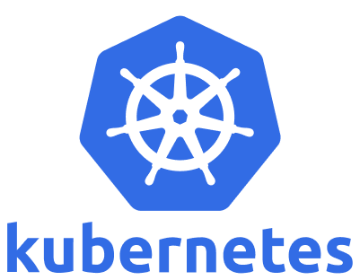

9.0 Introduction
{kind=link}

From Containers to Production Orchestration
In the previous chapter, you learned to package applications into containers and orchestrate them locally with Docker Compose. You can now run multi-container applications with a simple docker-compose up command. But what happens when your application needs to handle thousands of users, run across multiple servers, and deploy updates without downtime?
This is where Kubernetes transforms your containerized applications into production-ready, scalable systems. Think of Kubernetes as “Docker Compose for production” - but with superpowers like automatic scaling, self-healing, and zero-downtime deployments.
The Journey We’ll Take: This introduction will take you from understanding what Kubernetes is to how it works internally, culminating in why it’s essential for modern DevOps practices. You’ll see practical examples that build on your Docker knowledge and discover how Kubernetes solves real production challenges.
What is Kubernetes?
The Container Orchestration Platform
Kubernetes (pronounced “koo-ber-net-eez”, often shortened to “K8s”) is an open-source platform that automates the deployment, scaling, and management of containerized applications across clusters of servers.
Think of it this way: If Docker is like having a powerful single-family home for your applications, Kubernetes is like managing an entire smart city of interconnected buildings, complete with traffic management, utilities, and emergency services.
Core Philosophy - Declarative Management:
Unlike traditional imperative approaches where you tell systems how to do something step-by-step, Kubernetes uses a declarative model. You describe the desired state of your applications, and Kubernetes continuously works to maintain that state.
# You declare: "I want 3 replicas of my web app running"
apiVersion: apps/v1
kind: Deployment
metadata:
name: web-app
spec:
replicas: 3 # Desired state
selector:
matchLabels:
app: web-app
template:
metadata:
labels:
app: web-app
spec:
containers:
- name: web
image: nginx:latest
ports:
- containerPort: 80
Kubernetes then ensures: If a container crashes, it starts a new one. If a server fails, it moves containers to healthy servers. If traffic increases, it can automatically add more replicas.
Key Capabilities:
Automatic Scaling - Add or remove containers based on traffic and resource usage
Self-Healing - Restart failed containers and replace unhealthy nodes automatically
Zero-Downtime Deployments - Update applications without service interruption using rolling updates
Service Discovery - Containers find each other automatically using DNS and service names
Load Balancing - Distribute traffic intelligently across multiple container instances
Configuration Management - Separate application code from configuration using ConfigMaps and Secrets
Secrets Management - Handle sensitive data like passwords and API keys securely
Resource Management - Efficiently allocate CPU, memory, and storage across the cluster
The Google Connection - From Borg to Kubernetes
Kubernetes didn’t emerge from nowhere. It’s built on over a decade of Google’s experience running containers at massive scale. For years, Google has been operating billions of containers weekly using internal systems called Borg and Omega.
While Kubernetes isn’t a direct open-source version of these systems, it incorporates the hard-learned lessons from managing containerized workloads that serve billions of users. Many of the engineers who built Borg and Omega were instrumental in creating Kubernetes, ensuring that Google’s container orchestration expertise became available to everyone.
The name “Kubernetes” comes from the Greek word for “helmsman” - the person who steers a ship. This maritime theme is reflected in the logo’s ship’s wheel design. Interestingly, Kubernetes was originally going to be called “Seven of Nine” (a reference to the Star Trek character who was rescued from the Borg), but copyright issues led to the current name. The logo still subtly references this with its seven spokes.
Why “K8s”? The abbreviation replaces the eight letters between “K” and “s” with the number 8 - a common pattern in software naming.
Learning Objectives
By the end of this chapter, you will be able to:
Deploy your containerized applications to Kubernetes clusters
Scale applications automatically based on demand
Implement zero-downtime deployments with rollback capabilities
Manage application configuration and secrets securely
Integrate Kubernetes with your CI/CD pipelines
Monitor and troubleshoot applications in production
Apply production best practices for security and performance
Prerequisites: Understanding of containers (Chapter 8), CI/CD pipelines (Chapter 7), and experience with Docker Compose.
The Production Challenge
From Development to Scale
Imagine this scenario: Your containerized application stack from the previous chapter is running successfully in production using Docker Compose. But as your user base grows, you’re facing new challenges:
Real-World Production Problems:
Single Server Limitations
Your Docker Compose setup runs on one server:
- Traffic exceeds server capacity → Users see slow responses
- Server hardware fails → Complete outage until manual recovery
- Memory leaks in containers → Manual restart required
Deployment Challenges
Updating applications requires downtime:
- docker-compose down → Users can't access the application
- docker-compose up → Hope everything works correctly
- Rollback requires manual intervention and more downtime
Scaling Nightmares
Peak traffic requires manual intervention:
- Monitor server resources manually
- Edit docker-compose.yml to add replicas
- Restart entire stack to apply changes
- No automatic scale-down when traffic decreases
What You Need: Production-Grade Orchestration
You’ve mastered containers and CI/CD pipelines, but now you need a solution that can:
Automatically scale your applications across multiple servers
Handle failures gracefully without manual intervention
Deploy updates without any downtime
Integrate seamlessly with your existing automation
Provide enterprise-grade security and monitoring
This is where Kubernetes transforms from a nice-to-have tool into an essential platform for modern applications.
Docker Compose vs. Kubernetes - The Evolution:
Challenge |
Docker Compose Solution |
Kubernetes Solution |
|---|---|---|
Multiple Servers |
Single host only |
Manages entire clusters of servers |
High Availability |
Manual setup, single point of failure |
Built-in failover and self-healing |
Automatic Scaling |
Manual replica adjustment |
Auto-scale based on CPU, memory, custom metrics |
Rolling Updates |
Stop/start deployments (downtime) |
Zero-downtime rolling updates with rollback |
Load Balancing |
Basic port mapping |
Advanced traffic management and service mesh |
Health Monitoring |
Basic restart policies |
Comprehensive health checks and observability |
Configuration |
Environment files and volumes |
ConfigMaps, Secrets, and policy management |
Storage |
Local volumes only |
Distributed persistent volumes across cluster |
Migration Example - Your Web Application:
Your current Docker Compose setup:
# docker-compose.yml - Single server, basic orchestration
version: '3.8'
services:
web:
image: myapp:latest
ports:
- "8080:8080"
environment:
- DATABASE_URL=postgres://user:pass@db:5432/myapp
depends_on:
- database
restart: unless-stopped
database:
image: postgres:13
environment:
- POSTGRES_DB=myapp
- POSTGRES_USER=user
- POSTGRES_PASSWORD=pass
volumes:
- postgres_data:/var/lib/postgresql/data
Kubernetes equivalent - Production-ready orchestration:
# web-deployment.yaml - Scalable, self-healing application
apiVersion: apps/v1
kind: Deployment
metadata:
name: web-app
spec:
replicas: 3 # Multiple instances for reliability
selector:
matchLabels:
app: web-app
template:
metadata:
labels:
app: web-app
spec:
containers:
- name: web
image: myapp:latest
ports:
- containerPort: 8080
env:
- name: DATABASE_URL
valueFrom:
secretKeyRef: # Secure configuration management
name: db-config
key: url
readinessProbe: # Health checking for zero-downtime deployments
httpGet:
path: /health
port: 8080
initialDelaySeconds: 10
livenessProbe: # Self-healing - restart unhealthy containers
httpGet:
path: /health
port: 8080
initialDelaySeconds: 30
resources: # Resource management and auto-scaling
requests:
memory: "256Mi"
cpu: "250m"
limits:
memory: "512Mi"
cpu: "500m"
What Kubernetes Adds:
3 replicas instead of 1 - if one fails, two others keep serving traffic
Health checks - automatic restart of unhealthy containers
Resource limits - prevent one container from consuming all server resources
Secret management - database credentials stored securely, not in plain text
Rolling updates - deploy new versions without downtime
Auto-scaling - add more replicas when CPU usage is high
This is the power of Kubernetes: the same application, but with enterprise-grade reliability, security, and scalability built in.
How Kubernetes Works
The Control Loop Pattern
At its heart, Kubernetes operates on a simple but powerful principle: the control loop. This pattern continuously monitors the actual state of your applications and compares it to your desired state, taking corrective actions when they differ.
The Control Loop in Action:
1. Observe → What's currently running?
2. Compare → Does this match what I want?
3. Act → Make changes to reach desired state
4. Repeat → Continuously monitor and adjust
Practical Example - Handling Pod Failures:
Let’s say you’ve declared that you want 3 replicas of your web application running:
# Current state: 3 pods running
$ kubectl get pods
NAME READY STATUS RESTARTS
web-app-7d5f8b4c-abc123 1/1 Running 0
web-app-7d5f8b4c-def456 1/1 Running 0
web-app-7d5f8b4c-ghi789 1/1 Running 0
Scenario: One server crashes and takes a pod with it
# Current state: Only 2 pods running
$ kubectl get pods
NAME READY STATUS RESTARTS
web-app-7d5f8b4c-abc123 1/1 Running 0
web-app-7d5f8b4c-def456 1/1 Running 0
web-app-7d5f8b4c-ghi789 0/1 Pending 0 # Being recreated
Kubernetes automatically detects the difference: - Desired state: 3 running pods - Actual state: 2 running pods - Action: Create a new pod on a healthy server
Within seconds, you’re back to 3 running pods without any manual intervention.
The Distributed Architecture
Kubernetes achieves this through a distributed architecture with specialized components:
Control Plane Components (The “Brain”):
The control plane makes all the decisions about your cluster:
API Server - The central command center that handles all requests and communications
etcd - A distributed database that stores all cluster configuration and state information
Scheduler - Intelligently decides which server should run each new container
Controller Manager - Runs the control loops that ensure desired state matches actual state
Worker Node Components (The “Muscle”):
Worker nodes do the actual work of running your applications:
kubelet - The agent that communicates with the control plane and manages containers on each node
Container Runtime - The software that actually runs containers (containerd, CRI-O, etc.)
kube-proxy - Handles networking, load balancing, and service discovery
How They Work Together - A Deployment Example:
1. You: kubectl apply -f deployment.yaml
↓
2. API Server: Receives request, validates, stores in etcd
↓
3. Controller Manager: Detects new deployment, creates pods
↓
4. Scheduler: Decides which nodes should run the pods
↓
5. kubelet: Receives pod assignment, pulls images, starts containers
↓
6. kube-proxy: Sets up networking so pods can communicate
↓
7. Result: Your application is running and accessible
Why This Architecture Matters:
This distributed design provides the reliability and scale that production applications require. If one worker node fails, your applications continue running on other nodes. If the control plane has multiple replicas, the cluster remains operational even if some control plane components fail.
Core Concepts Preview
The Building Blocks in Action
Now that you understand how Kubernetes works internally, let’s preview the key objects you’ll work with daily. These concepts replace and extend the services you defined in Docker Compose:
Pods - The Atomic Unit: Groups of containers that work together and share networking and storage. Think of a Pod as a “logical host” for your application.
# A simple pod running a web server
apiVersion: v1
kind: Pod
metadata:
name: web-pod
spec:
containers:
- name: web
image: nginx:latest
ports:
- containerPort: 80
Deployments - Managing Scale and Updates: Manage multiple copies of your Pods, handle updates, and ensure the right number of instances are always running.
# A deployment that ensures 3 replicas are always running
apiVersion: apps/v1
kind: Deployment
metadata:
name: web-deployment
spec:
replicas: 3
selector:
matchLabels:
app: web
template:
metadata:
labels:
app: web
spec:
containers:
- name: web
image: nginx:latest
Services - Stable Networking: Provide stable endpoints for your Pods, even as individual containers come and go.
# A service that load balances across all web pods
apiVersion: v1
kind: Service
metadata:
name: web-service
spec:
selector:
app: web
ports:
- port: 80
targetPort: 80
type: LoadBalancer
ConfigMaps and Secrets - Configuration Management: Store configuration data and sensitive information separately from your application code.
# Configuration stored separately from code
apiVersion: v1
kind: ConfigMap
metadata:
name: app-config
data:
database_host: "postgres.example.com"
cache_size: "1024"
Real-World Example - Complete Application Stack:
Here’s how these components work together to deploy a web application with a database:
# The workflow you'll learn:
kubectl apply -f database-deployment.yaml # Deploy PostgreSQL
kubectl apply -f database-service.yaml # Expose database internally
kubectl apply -f web-deployment.yaml # Deploy web application
kubectl apply -f web-service.yaml # Expose web app to users
kubectl apply -f config-map.yaml # Apply configuration
What happens behind the scenes:
Kubernetes creates database pods and a service for internal access
Web application pods start and connect to the database service
A load balancer service exposes the web application to external traffic
If any component fails, Kubernetes automatically restarts it
If traffic increases, you can easily scale by changing replica counts
Practical Learning Approach:
In the following sections, you’ll work with these concepts hands-on:
Getting Started - Set up a local Kubernetes environment and deploy your first application
Core Concepts - Master Pods, Deployments, Services, and configuration management
Production Deployments - Connect your CI/CD pipelines to Kubernetes for automated deployments
Package Management - Use Helm to package and manage complex applications
GitOps - Automate deployments with ArgoCD for git-driven operations
Best Practices - Secure and optimize your clusters for production workloads
Each section builds on the previous one, using practical examples with applications you’ve built in earlier chapters, ensuring you can immediately apply these concepts to real projects.
Kubernetes in the DevOps Context
Completing Your DevOps Pipeline
In the pipelines chapter, you built CI/CD workflows that automatically test, build, and package applications. In the containers chapter, you learned to create portable, reliable application packages. Kubernetes is where these capabilities converge to create a complete DevOps platform.
The Complete Pipeline Integration:
Developer Push → GitHub Actions → Docker Build → Container Registry → Kubernetes Deploy
↓ ↓ ↓ ↓ ↓
Code commits → Automated tests → Image creation → Artifact storage → Production rollout
Practical GitOps Workflow:
# .github/workflows/deploy.yml
name: Deploy to Kubernetes
on:
push:
branches: [main]
jobs:
deploy:
runs-on: ubuntu-latest
steps:
- uses: actions/checkout@v4
- name: Build and push image
run: |
docker build -t myapp:${{ github.sha }} .
docker push myregistry/myapp:${{ github.sha }}
- name: Deploy to Kubernetes
run: |
kubectl set image deployment/web-app web=myapp:${{ github.sha }}
kubectl rollout status deployment/web-app
Integration Benefits:
Traceability: Every deployment links back to specific code commits
Consistency: Same container runs in development, staging, and production
Automation: Zero manual deployment steps reduce human error
Rollback capability: Previous versions remain available for instant rollback
Environment parity: Identical deployment process across all environments
Ready to Get Started?
Your Learning Journey Ahead
You now understand:
What Kubernetes is (container orchestration platform)
How it works (control loops, distributed architecture, declarative management)
Why you need it (production scale, reliability, automation)
Where it fits (completing your DevOps pipeline)
In the next section, we’ll move from theory to practice. You’ll set up a local Kubernetes environment and deploy your first application, experiencing firsthand the power of declarative orchestration.
The journey from understanding why Kubernetes matters to deploying production applications starts with a single kubectl apply command. Let’s begin that journey.